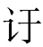
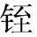

《周礼》[20]，外史掌三皇五帝之书，[21]今已莫知其书为何等。假使五帝书诚为五典，则今惟《尧典》在《尚书》[22]中。“尚者，上也。上所为，下所书也。”（王充《论衡》《须颂篇》）或曰：“言此上代以来之书。”（孔颖达《尚书正义》）纬书[23]谓“孔子求书，得黄帝玄孙帝魁之书，迄于秦穆公，凡三千二百四十篇。断远取近，定可为世法者百二十篇：以百二篇为《尚书》，十八篇为《中候》。去三千一百二十篇。”（《尚书璇玑钤》）乃汉人侈大之言，不可信。《尚书》盖本百篇：《虞夏书》二十篇，《商书》《周书》各四十篇。[24]今本有序，相传孔子所为，言其作意（《汉书》《艺文志》），然亦难信，以其文不类也。[25]秦燔烧经籍，济南伏生[26]抱书藏山中，又失之。汉兴，景帝使晁错往从口授，而伏生旋老死，仅得自《尧典》至《秦誓》二十八篇；故汉人尝以拟二十八宿。[27]
《书》之体例有六：曰典，曰谟，曰训，曰诰，曰誓，曰命，[28]是称六体。然其中有《禹贡》[29]，颇似记，余则概为训下与告上之词，犹后世之诏令与奏议也。其文质朴，亦诘屈难读，距以藻韵为饰，俾便颂习，便行远之时，盖已远矣。晋卫宏[30]则云，“伏生老，不能正言，言不可晓，使其女传言教错。齐人语多与颍川异，错所不知，凡十二三，略以其意属读而已。”故难解之处多有。今即略录《尧典》中语，以见大凡：
“……帝曰：畴咨若时，登庸。放齐曰：胤子朱，启明。帝曰：吁！嚚讼，可乎？帝曰：畴咨若予采？驩兜曰：都！共工，方鸠僝工。帝曰：吁！静言庸违，象恭，滔天！帝曰：咨，四岳！汤汤洪水方割，荡荡怀山襄陵，浩浩滔天，下民其咨。有能，俾。佥曰：於，鲧哉！帝曰：吁，咈哉！方命，圮族。岳曰：异哉！试可，乃已。帝曰：往，钦哉！九载，绩用弗成。帝曰：咨，四岳！朕在位七十载，汝能庸命，巽朕位。岳曰：否德，忝帝位。曰：明明，扬侧陋！师锡帝曰：有鳏在下，曰虞舜。帝曰：俞！予闻。如何？岳曰：瞽子。父顽，母嚚，象傲。克谐以孝，烝烝，不格奸。帝曰：我其试哉。女于时观厥刑于二女，釐降二女于妫汭，嫔于虞。”
扬雄曰，“昔之说《书》者序以百，……《虞》《夏》之书浑浑尔，《商书》灏灏尔，《周书》噩噩尔。”（《法言》《问神》）[31]虞夏禅让，独饶治绩，敷扬休烈，故深大矣；周多征伐，上下相戒，事危而言切，则峻肃而不阿借；惟《商书》时有哀激之音，若缘厓而失其援，以为夷旷，所未详也。如《西伯戡黎》：
“西伯既戡黎，祖伊恐，奔告于王曰：天子！天既讫我殷命，格人元龟，罔敢知吉。非先王不相我后人，惟王淫戏用自绝。故天弃我，不有康食。不虞天性，不迪率典。今我民罔弗欲丧，曰，天曷不降威，大命不挚？今王其如台。王曰：呜呼！我生不有命在天？祖伊反曰：呜呼！乃罪多参在上，乃能责命于天？殷之即丧，指乃功，不无戮于尔邦！”
武帝时，鲁共王[32]坏孔子旧宅，得其末孙惠所藏之书，字皆古文。孔安国[33]以今文校之，得二十五篇，其五篇与伏生所诵相合，因并依古文，开其篇第，以隶古字写之，合成五十八篇。会巫蛊事[34]起，不得奏上，乃私传其业于生徒，称《尚书》古文之学（《隋书》《经籍志》）。而先伏生所口授者，缘其写以汉隶，遂反称今文。
孔氏所传，既以值巫蛊不行，遂有张霸[35]之徒，伪造《舜典》《汨作》等二十四篇，亦称古文书，而辞义芜鄙，不足取信于世。若今本孔传《古文尚书》，则为晋豫章梅赜[36]所奏上，独失《舜典》；至隋购募，乃得其篇，唐孔颖达[37]疏之，遂大行于世。宋吴棫[38]始以为疑；朱熹更比较其词，以为“今文多艰涩，而古文反平易”，“却似晋宋间文章”，并书序亦恐非安国作也。[39]明梅[40]作《尚书考异》，尤力发其复，谓“《尚书》惟今文传自伏生口诵者为真古文。出孔壁中者，尽后儒伪作，大抵依约诸经《论》《孟》中语，并窃其字句而缘饰之”云。
诗歌之起，虽当早于记事，然葛天《八阕》，黄帝乐词[41]，仅存其名。《家语》谓舜弹五弦之琴，造《南风》之诗[42]曰：“南风之熏兮，可以解吾民之愠兮；南风之时兮，可以阜吾民之财兮。”《尚书大传》[43]又载其《卿云歌》云：“卿云烂兮，糺缦缦兮，日月光华，旦复旦兮！”辞仅达意，颇有古风，而汉魏始传，殆亦后人拟作。其可征信者，乃在《尚书》《皋陶谟》，（伪孔传《尚书》分之为《益稷》）曰：
“……夔曰：於！予击石拊石，百兽率舞，庶尹允谐。帝庸作歌曰：敕天之命，惟时惟几。乃歌曰：股肱喜哉，元首起哉，百工熙哉！皋陶拜手稽首扬言曰：念哉！率作兴事，慎乃宪，钦哉！屡省乃成，钦哉！乃赓载歌曰：元首明哉，股肱良哉，庶事康哉！又歌曰：元首丛脞哉，股肱惰哉，万事堕哉！帝曰：俞，往，钦哉！”
以体式言，至为单简，去其助字，实止三言，与后之“汤之《盘铭》[44]曰：苟日新，日日新，又日新”同式；又虽亦偶字履韵，而朴陋无华，殊无以胜于记事。然此特君臣相勗，冀各慎其法宪，敬其职事而已，长言咏叹，故命曰歌，固非诗人之作也。
自商至周，诗乃圆备，存于今者三百五篇，称为《诗经》。其先虽遭秦火，而人所讽诵，不独在竹帛，故最完。司马迁[45]始以为“古者《诗》三千余篇，及至孔子，去其重，取其可施于礼义，上采契后稷，中述殷周之盛，至幽厉之缺。”然唐孔颖达已疑其言；宋郑樵则谓诗皆商周人作，孔子得于鲁太师，编而录之。朱熹于诗，其意常与郑樵合，亦曰：“人言夫子删诗，看来只是采得许多诗，夫子不曾删去，只是刊定而已。”[46]
《书》有六体，《诗》则有六义焉：一曰风，二曰赋，三曰比，四曰兴，五曰雅，六曰颂。风雅颂以性质言：风者，闾巷之情诗；雅者，朝廷之乐歌；颂者，宗庙之乐歌也。是为《诗》之三经。赋比兴以体制言：赋者直抒其情；比者借物言志；兴者托物兴辞也。是为《诗》之三纬。风以《关雎》始，雅有大小，小雅以《鹿鸣》始，大雅以《文王》始；颂以《清庙》始；是为四始。汉时，说《诗》者众，鲁有申培，齐有辕固，燕有韩婴，[47]皆尝列于学官，而其书今并亡。存者独有赵人毛苌诗传，其学自谓传自子夏；河间献王尤好之。[48]其诗每篇皆有序，郑玄以为首篇大序即子夏作，后之小序则子夏毛公合作也。[49]而韩愈则云，“子夏不序诗。”[50]朱熹解诗，亦但信诗不信序。[51]然据范晔说，则实后汉卫宏之所为尔。[52]
毛氏《诗序》既不可信，三家《诗》又失传，作诗本义遂难通晓。而《诗》之篇目次第，又不甚以时代为先后，故后来异说滋多。明何楷作《毛诗世本古义》[53]，乃以诗编年，谓上起于夏少康时（《公刘》，《七月》等）而讫于周敬王之世（《下泉》），虽与孟子知人论世[54]之说合，然亦非必其本义矣。要之《商颂》[55]五篇，事迹分明，词亦诘屈，与《尚书》近似，用以上续舜皋陶之歌，或非诬欤？今录其《玄鸟》一篇；《毛诗》序曰：祀高宗也。
“天命玄鸟，降而生商，宅殷土芒芒。古帝命武汤，正域彼四方，方命厥后，奄有九有。商之先后，受命不殆，在武丁孙子。武丁孙子，武王靡不胜，龙旗十乘，大糦是承。邦畿千里，维民所止，肇域彼四海，四海来假。来假祁祁，景员维河，殷受命咸宜，百禄是何。”
至于二《雅》，则或美或刺，较足见作者之情，非如《颂》诗，大率叹美。如《小雅》《采薇》，言征人远戍，虽劳而不敢息云：
“采薇采薇，薇亦作止。曰归曰归，岁亦莫止。靡室靡家，狁之故；不遑启居，狁之故。……彼尔维何？维常之华。彼路斯何？君子之车。戎车既驾，四牡业业；岂敢定居，一月三捷。……昔我往矣，杨柳依依；今我来思，雨雪霏霏，行道迟迟，载渴载饥。我心伤悲，莫知我哀！”
此盖所谓怨诽而不乱，温柔敦厚之言矣。[56]然亦有甚激切者，如《大雅》《瞻卬》：
“瞻卬昊天，则不我惠，孔填不宁，降此大厉。邦靡有定，士民其瘵。蟊贼蟊疾，靡有夷届；罪罟不收，靡有夷瘳！人有土田，女反有之；人有民人，女复夺之。此宜无罪，女反收之；彼宜有罪，女复说之！哲夫成城，哲妇倾城。……觱沸槛泉，维其深矣；心之忧矣，宁自今矣。不自我先，不自我后。藐藐昊天，无不克巩；无忝皇祖，式救尔后！”
《国风》之词，乃较平易，发抒情性，亦更分明。如：
“野有死麕，白茅包之；有女怀春，吉士诱之。林有朴樕；野有死鹿，白茅纯束；有女如玉。舒而脱脱兮；无感我帨兮；无使尨也吠！”（《召南》《野有死麕》）
“溱与洧，方涣涣兮；士与女，方秉蕳兮。女曰观乎，士曰既且。且往观乎，洧之外，洵

且乐。维士与女，伊其相谑，赠之以勺药。……”（《郑风》《溱洧》）“山有枢，隰有榆。子有衣裳，弗曳弗娄；子有车马，弗驰弗驱；宛其死矣，他人是愉。山有栲，隰有杻。子有廷内，弗洒弗扫；子有钟鼓，弗鼓弗考，宛其死矣，他人是保。山有漆，隰有栗。子有酒食，何不日鼓瑟？且以喜乐，且以永日。宛其死矣，他人入室。”（《唐风》《山有枢》）
《诗》之次第，首《国风》，次《雅》，次《颂》。《国风》次第，则始周召二南[57]，次邶鄘卫王郑齐魏唐秦陈桧曹而终以豳。其序列先后，宋人多以为即孔子微旨所寓，[58]然古诗流传来久，篇次未必一如其故，今亦无以定之。惟《诗》以平易之《风》始，而渐及典重之《雅》与《颂》；《国风》又以所尊之周室始，次乃旁及于各国，则大致尚可推见而已。
《诗》三百篇，皆出北方，而以黄河为中心。其十五国中，周南召南王桧陈郑在河南，邶鄘卫曹齐魏唐在河北，豳秦则在泾渭之滨，疆域概不越今河南山西陕西山东四省之外。其民厚重，故虽直抒胸臆，犹能止乎礼义，忿而不戾，怨而不怒，哀而不伤，乐而不淫，虽诗歌，亦教训也。然此特后儒之言，实则激楚之言，奔放之词，《风》《雅》中亦常有，而孔子则曰：“《诗》三百，一言以蔽之，曰：思无邪。”后儒因孔子告颜渊为邦，曰“放郑声”。又曰：“恶郑声之乱雅乐也。”[59]遂亦疑及《郑风》，以为淫逸，失其旨矣。自心不净，则外物随之，嵇康[60]曰：“若夫郑声，是音声之至妙，妙音感人，犹美色惑志，耽槃荒酒，易以丧业，自非至人，孰能御之。”（本集《声无哀乐论》）世之欲捐窈窕之声，盖由于此，其理亦并通于文章。
参考书：
《尚书正义》（唐孔颖达）
《毛诗正义》（同上）
《经义考》（清朱彝尊）卷七十二至七十六 卷九十八至一百
《支那文学史纲》（日本儿岛献吉郎）第二篇二至四章
《诗经研究》（谢无量）
注 释
[20] 《周礼》 又名《周官》，记述周王室官制和战国时各国制度，战国后期写成。内分《天官冢宰》、《地官司徒》、《春官宗伯》、《夏官司马》、《秋官司寇》、《冬官司空》六篇。《冬官司空》已佚，西汉河间献王（刘德）补以《考工记》。
[21] 外史 《周礼·春官宗伯》载：“外史掌书外令，掌四方之志，掌三皇五帝之书，掌达书名于四方。若以书使于四方，则书其令。”三皇五帝之书，即“三坟五典”。西汉孔安国《尚书序》载：“伏羲、神农、黄帝之书谓之三坟，言大道也。少昊、颛顼、高辛、唐、虞之书谓之五典，言常道也。”
[22] 《尧典》 《尚书》第一篇，也称“帝典”。主要记载尧舜禅让事迹等。《尚书》，即《书》，中国上古历史文件和追述古代史事的著作的汇编。
[23] 纬书 汉代人混合神学迷信思想附会儒家经义的书。《易》、《书》、《诗》、《礼》、《乐》、《春秋》、《孝经》七经的纬书，统称“七纬”。《璇玑钤》即《尚书纬》的一种。明胡应麟《四部正 》：“纬之名，所以配经。”原书已失传，明孙
》：“纬之名，所以配经。”原书已失传，明孙 《古微书》、清马国翰《玉函山房辑佚书》有辑录。帝魁，南宋罗泌《路史后纪·黄帝纪》：“帝魁氏，大鸿氏之曾孙也。”传说大鸿氏系黄帝之子。《中候》，即《尚书中候》十八篇，也是《尚书》的一种纬书。
《古微书》、清马国翰《玉函山房辑佚书》有辑录。帝魁，南宋罗泌《路史后纪·黄帝纪》：“帝魁氏，大鸿氏之曾孙也。”传说大鸿氏系黄帝之子。《中候》，即《尚书中候》十八篇，也是《尚书》的一种纬书。
[24] 《虞夏书》 指《虞书》和《夏书》。《虞书》记载传说中唐尧、虞舜、夏禹等事迹，《夏书》记载夏代史事。《商书》记载商代史事，《周书》记载周代史事。
[25] 关于孔子作《书》序，据《汉书·艺文志》：“故《书》之所起远矣，至孔子纂焉。上断于尧，下迄于秦，凡百篇，而为之序，言其作意。”
[26] 伏生 名胜，字子贱，西汉济南（郡治今山东章丘）人。《史记·儒林列传》：“故为秦博士。孝文帝时，欲求能治《尚书》者，天下无有，乃闻伏生能治，欲召之。是时伏生年九十余，老，不能行，于是乃诏太常使掌故晁错往受之。秦时焚书，伏生壁藏之。其后兵大起，流亡，汉定，伏生求其书，亡数十篇，独得二十九篇，即以教于齐鲁之间。”下文“景帝”应作“文帝”。
[27] 关于汉人以《书》二十八篇拟二十八宿，据《史记·儒林列传》唐司马贞《索隐》：“孔臧与安国书云：‘旧《书》潜于壁室，尔复出，古训复申。唯闻《尚书》二十八篇取象二十八宿，何图乃有百篇’。”
[28] 典、谟、训、诰、誓、命 《尚书》中的六种文体。典，记述帝王言行，以作后代常法，如《尧典》。谟，记述君臣谋议国事，如《皋陶谟》。训，记述训导言词，如《伊训》。诰，施政文告，如《汤诰》。誓，临战勉励将士的誓词，如《牧誓》。命，帝王的诏令，如《顾命》。
[29] 《禹贡》 《尚书·夏书》的一篇。内容记述夏禹王划定冀、兖、青、徐等九州，并记载各州山川、土壤、物产和贡赋等级。近人认为，反映如此广大地区自然现象和贡赋问题的记叙文，只有至战国时始可能出现。
[30] 卫宏 字敬仲，东汉东海（郡治今山东郯城）人。光武帝时任议郎，官至给事中。治《毛诗》及《古文尚书》。卫宏语见《汉书·儒林传》颜师古注。“晋”应作“东汉”。
[31] 扬雄 参看本卷第27页注〔12〕。撰有《法言》、《方言》等书和《甘泉》、《长杨》等赋。《法言》，十三卷，模仿《论语》写成的著作。“昔之说《书》者序以百”，据唐孔颖达《尚书正义》：“按郑（玄）序《虞夏书》二十篇，《商书》四十篇，《周书》四十篇。”
[32] 鲁共王 即刘余，西汉景帝子。《隋书·经籍志》载：“鲁共王坏孔子旧宅，得其末孙惠所藏之书，字皆古文。”
[33] 孔安国 字子国，孔子十二世孙，汉武帝时曾任谏大夫、临淮太守。《隋书·经籍志》载：孔子旧宅所藏之书“字皆古文，孔安国以今文校之，……又济南伏生所诵，有五篇相合。安国并依古文，开其篇第，以隶古字写之，合成五十八篇”。这里所说“五篇相合”，据《孔传序》云：伏生以“《舜典》合于《尧典》，《益稷》合于《皋陶谟》，《盘庚》三篇合为一，《康王之诰》合于《顾命》”；“合成五十八篇”，从伏生口授的二十八篇分出“相合”的五篇，计三十三篇，再加孔安国校的二十五篇，共五十八篇。
[34] 巫蛊事 指巫蛊之祸。武帝晚年多病，疑有人以巫蛊之术谋害他。宠臣江充遂诬陷太子以蛊术谋篡位。征和二年，太子被逼出奔，最后自杀。为追查巫蛊事死者达数万人。巫蛊，当时迷信认为将木偶埋于地下，用巫术诅咒，可以害人。
[35] 张霸 西汉东莱（郡治今山东掖县）人。汉成帝时伪造古文《尚书》。东汉王充《论衡·正说篇》：“至孝成皇帝时，征为古文《尚书》学。东海张霸案百篇之序，空造百两之篇，献之成帝。帝出秘百篇以校之，皆不相应，于是下霸于吏。吏白霸罪当至死，成帝高其才而不诛，亦惜其文而不灭。”张霸所造，世称《百两篇》。《汉书·儒林传》：“世所传《百两篇》者，出东莱张霸，分析合二十九篇以为数十，又采《左氏传》、《书叙》为作首尾，凡百二篇。”
[36] 梅赜 又作梅颐或枚赜，字仲真，东晋汝南西平（今属河南）人，曾任豫章内史。东晋元帝时，奏献孔传《古文尚书》。
[37] 孔颖达（574—648） 字冲远，唐冀州衡水（今属河北）人。由隋入唐，官至国子祭酒，奉太宗命主编《五经正义》。
[38] 吴棫（约1100—1154） 字才老，南宋建安（今福建建瓯）人，官泉州通判，撰有《韵补》等。他对《古文尚书》的怀疑，见所撰《书稗传》。该书已佚，清阎若璩《古文尚书疏证》卷八称：“疑古文自吴才老始。”南宋朱熹、明梅均曾引述吴棫之说。
[39] 朱熹 参看本卷第92页注〔15〕。他撰有《四书章句集注》、《诗集传》和《朱子语类》等。他对孔传《古文尚书》的怀疑，见《朱子语类》卷七十八。
[40] 梅 字致斋，明旌德（今属安徽）人，武宗正德年间举人。曾官南京国子监助教、盐课司提举。撰有《尚书考异》、《尚书谱》。
字致斋，明旌德（今属安徽）人，武宗正德年间举人。曾官南京国子监助教、盐课司提举。撰有《尚书考异》、《尚书谱》。
[41] 黄帝乐词 即《咸池》。《汉书·礼乐志》：“昔黄帝作《咸池》。”
[42] 《家语》 《孔子家语》的简称，《汉书·艺文志》著录二十七卷。今本十卷，宋以来即认为系魏时王肃收集和伪造。《南风》，《礼记·乐记》：“昔者舜作五弦之琴，以歌南风。”《南风》歌见《尸子》和《家语》。
[43] 《尚书大传》 旧题西汉伏生撰。清陈寿祺有辑本。其中说：“舜为宾客，而禹为主人。……于时卿云聚，俊集，百工相和而歌《庆云》”。按“卿云”亦作“庆云”。
[44] 《盘铭》 见《礼记·大学》。朱熹注：“盘，沐浴之盘也。铭，名其器以自警之辞也。”
[45] 司马迁（约前145—约前86） 参看本书第十篇。引文见《史记·孔子世家》。
[46] 关于孔子删诗，孔颖达怀疑《史记》之言，见《诗谱序》疏：“如《史记》之言，则孔子之前，诗篇多矣。案书传所引之诗，见在者多，亡逸者少，则孔子所录，不容十分去九。马迁言古诗三千余篇，未可信也。”郑樵（1103—1162），字渔仲，南宋莆田（今属福建）人，官至枢密院编修，撰《通志》二百卷。他在所撰《六经奥论·删诗辨》中说：“夫《诗》上自《商颂》祀成汤，下至《株林》刺陈灵公，上下千余年，而诗才三百五篇，有更十君而取一篇者。皆商周人所作。夫子并得之于鲁太师，编而录之，非有意于删也。”下文所引朱熹对孔子删诗问题的话，见《朱子语类》卷二十三。
[47] 申培 又称申公，西汉鲁（今山东曲阜）人。初为楚王戊太傅，为戊所辱。回乡讲学，武帝时征为太中大夫，年已八十余。因窦太后好黄老之学，他倡议尊儒触怒太后，约建元三年罢归，数年后卒。创鲁诗学派。《汉书·艺文志》著录《鲁故》二十五卷，《鲁说》二十八卷，已失。辕固，又称固生，西汉齐（今山东淄博）人，景帝时博士，为清河王太傅，病归。武帝时又应征召，因老免归。创齐诗学派。韩婴，西汉燕（今北京）人，文帝时博士。景帝时为常山王太傅，武帝时尚在朝堂论学。创韩诗学派。《汉书·艺文志》著录《韩故》三十六卷，《韩说》四十一卷，《韩内传》四卷，《韩外传》六卷。此三家《诗》学均由朝廷列为经学科目，其书均已亡佚。清王先谦有辑本《诗三家义集疏》。
[48] 毛苌 苌一作“长”，西汉赵（郡治今河北邯郸）人。相传是“毛诗学”的传授者。曾任河间献王博士。子夏（前507—？），姓卜名商，春秋时晋国温（今河南温县）人，孔子门徒。相传《诗》、《春秋》是由他传授下来的。河间献王，即刘德，参看本卷第419页注〔31〕。
[49] 大序 《国风》首篇《关雎》“小序”后所载有关《诗》的总序，综论古代诗歌性质、内容、形式和作用诸问题。小序，《诗》各篇题下对该诗所作的简要解释。郑玄关于《诗》大序、小序作者问题的意见，见其所撰《诗谱》。毛公，即毛亨，西汉鲁（今山东曲阜）人，一说河间（郡治今河北献县）人。相传是“毛诗学”的创立者。“毛诗学”传自毛亨，后人因称毛亨为“大毛公”，毛苌为“小毛公”。
[50] 韩愈 参看本卷第80页注〔1〕。明杨慎《升庵经说·诗小序》：“予见古本韩文，有《议诗序》一篇，其言曰‘子夏不序诗’。”
[51] 朱熹不信《诗》序，见《朱子语类》卷八十：“《诗小序》全不可信，如何定知是美刺那人？”朱熹《诗集传》对某些诗篇的评论与《诗序》不同。
[52] 范晔 参看本卷第42页注〔9〕。他所撰《后汉书·儒林列传》云：“卫宏字敬仲，东海人也。……九江谢曼卿善《毛诗》，乃为其训，宏从曼卿受学，因作《毛诗序》。”
[53] 何楷 字元子，明镇海卫（今福建漳浦）人，熹宗天启年间进士。崇祯时官户部主事、工科给事中。所撰《毛诗世本古义》，又名《诗经世本古义》，二十八卷。对《诗》三百篇勉强划分时代，附会作者姓名；名物训诂方面，引证考据较详。
[54] 知人论世 语出《孟子·万章（下）》：“颂其诗，读其书，不知其人可乎？是以论其世也，是尚友也。”
[55] 《商颂》 包括《那》、《烈祖》、《玄鸟》、《长发》、《殷武》五篇。自宋代起，即有人怀疑《商颂》并非商代作品，清魏源《诗古微·商颂发微篇》考定为宋襄公大夫正考父所作。
[56] 怨诽而不乱 语见司马迁《史记·屈原贾生列传》：“《国风》好色而不淫，《小雅》怨诽而不乱。”温柔敦厚，语见《礼记·经解》：“孔子曰：‘入其国，其教可知也。其为人也，温柔敦厚，《诗》教也’。”
[57] 周召二南 指《国风》中的《周南》和《召南》。周是周公旦管理的地区，召是召公奭管理的地区。周灭殷后，将原来周的封邑分封给周召二公，在今陕西凤翔一带。但二南中所收录的诗，其范围除上述两个地区外，还包括南方江汉一带的诗。
[58] 关于《诗经》序列先后问题，宋代学者如欧阳修《诗解·十五国次解》云：“《国风》之号，起《周》终《豳》，皆有所次，圣人岂徒云哉？”
[59] “《诗》三百”等句，见《论语·为政》。“放郑声”，见《论语·卫灵公》：“颜渊问为邦。子曰：‘行夏之时，乘殷之辂，服周之冕，乐则《韶》、《舞》，放郑声，远佞人。郑声淫，佞人殆’。”“恶郑声之乱雅乐也”，见《论语·阳货》。
[60] 嵇康（223—263） 字叔夜，三国魏谯郡

（今安徽宿县）人。官中散大夫，撰有《嵇中散集》。